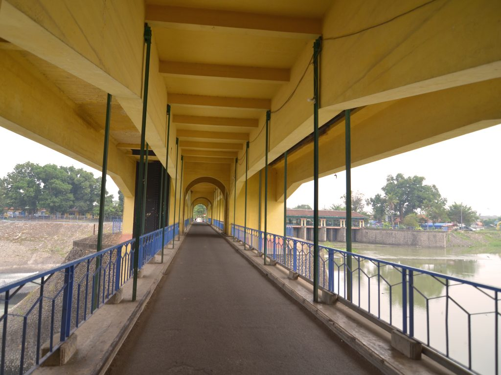
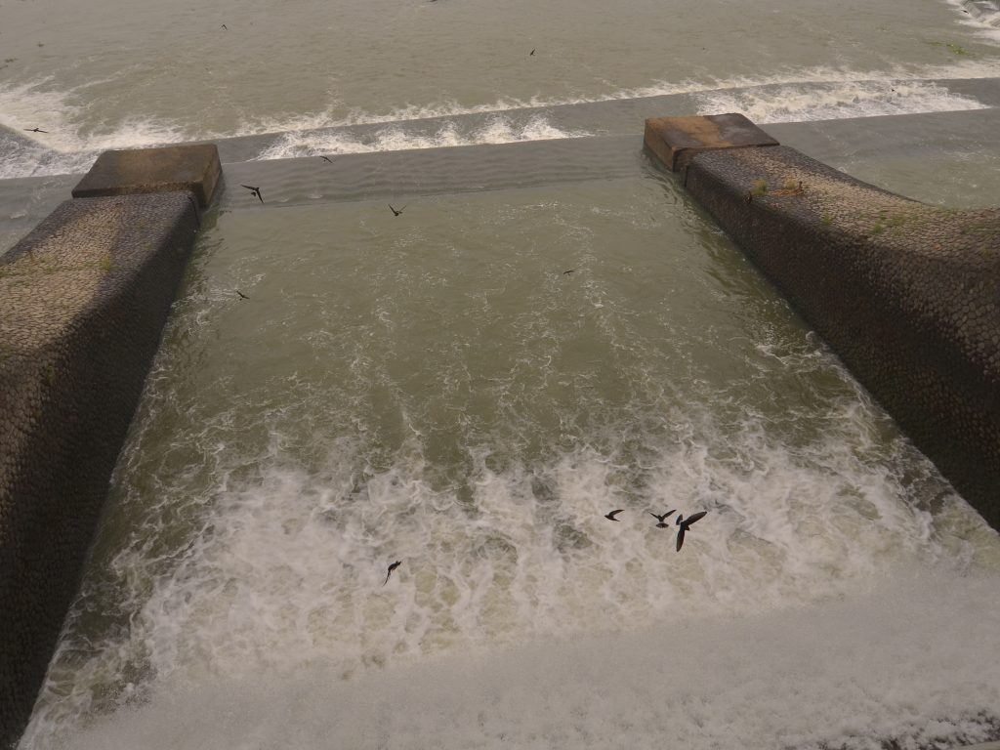

Walahar, Klari, Karawang, Jawa Barat.
Bendungan Walahar yang terletak di Desa Walahar Kec. Ciampel, Karawang berbatasan dengan Desa Kutapohaci ini merupakan salah satu situs peninggalan zaman Belanda. Dulu dikenal dengan nama Parisdo. Terletak di Desa Walahar Kec. Klari Kab. Karawang dengan letak astronomis pada koordinat 06° 22′ 973″ S, 107° 21′ 660″.
Bendungan ini menahan aliran Sungai Citarum selebar 50 m, membentuk waduk seluas 15 ha pada kawasan dataran rendah di pantai utara. Bendungan ini membagi Sungai Citarum yang difungsikan untuk megatur debit dan sirkulasi air dalam mengairi areal pesawahan di Karawang. Bagian dasarnya merupakan bagian dari dam, dengan jembatan jalan sekitar 3 m melintang di atasnya. Pada jembatan ini terdapat semacam bangunan terdiri beberapa ruangan, dengan bentuk langit-langit di atas jembatan yang melengkung. Pada dinding di atas jalan masuk terdapat tulisan “Bendung Walahar Kali Tjitarum Mulai Dipakai 30 Nopember 1925 untuk mengairi sawah luas 87.506 ha”.
Sebagai tempat bersejarah, Bendungan Walahar ini saksi dari bergesernya peradaban sungai khususnya di Karawang. Setidaknya, Belanda terkenal memiliki keunggulan dalam system pengairan mempelopori dibuatnya bendungan ini dengan memaksimalkan Sungai Citarum dan mmbaginya kedalam anak sungai yang disebar kepenjuru Karawang. Proyek Pengerjaan bendungan ini mulai sejak tahun 1918 dan selesai pada tahun 1925, diawasi oleh seorang ahli perairan berkebangsaan Belanda, C. Swaan koopman. Tujuan utama pembangunan bendungan ini untuk menunjang sistem irigasi bagi ribuan hektar persawahan di daerah Karawang yang merupakan pemasok utama kebutuhan beras di Indonesia pada saat itu. Bendungan ini dilengkapi dengan jalan menghubung ruangan yang ada. Menurut pada catata sejarah yang ada, di masa kerajaan, Sungai Citarum merupakan jalur utama perdaganga dan transportasi, disaat jalur darat memiliki resiko lebih tinggi. Adanya pelabuhan Karawang yang kini menjadi Alun-Alun Karawang serta peninggalan candi di Batujaya yang dibangun oleh Kerajaan Tarumanegara menjadi bukti pentingnya Sungai Citarum sejak dulu.
Di samping fungsi utama Bendungan Walahar untuk mengairi sawah, masyarakat sekitar juga memfungsikannya untuk keperluan lain, khususnya sebagai sarana rekreasi. Selain itu, setiap hari libur banyak yang memanfaatkannya untuk memancing atau sekedar melepas penat dengan menikmati deburan air yang berasal dari dam. Anda tidak perliu khawatir dengan kenyamanan kunjungan karena bendungan ini juga menyediakan fasilitas wisata kuliner berupa deretan rumah makan khas Walahar yang menyajikan pepes ikan jambal.